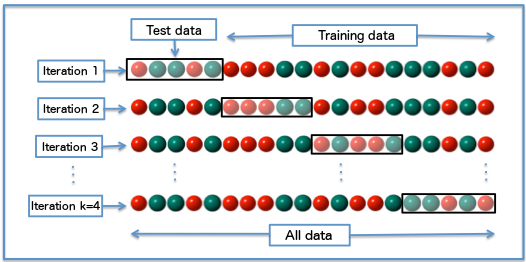

class: center, middle # Introduce Machine Learning <h3 style="color: gray">Presented by Tae Geun Kim</h3> --- # Table of Contents 1. Types of Machine Learning 2. Scoring Machine Learning Algorithm 3. ... --- class: center, middle # Types of Machine Learning --- ## Types of Machine Learning -- * Supervised Learning -- * Unsupervised Learning -- * Reinforcement Learning -- * Evolutionary Learning --- <p style="text-align:center"><img src="MachineLearningAlgorithms.png" alt="ML" align="middle" width="100%"></p> --- We will divide ML by two ways * Statistical Learning (Based on Statistics) * Deep Learning (Based on Induction) -- For Statistical Learning, -- * Statistics -- * R (or Scipy or Julia) -- * DIY (Do It Yourself with your own languages) -- For Deep Learning, -- * Tensorflow -- * Torch / PyTorch -- * MXNet or Other frameworks --- class: center, middle # Scoring Machine Learning Algorithm --- ## 1. Overfitting <img src="overfitting.png" width="100%"> We need third data sets - **validation set**. This procedure called **Cross Validation**. --- But in some cases, we can't get enough labeled data. So, we need **semi-supervised learning**. There are some ways : -- * Leave Some Out (Leave one out) -- * Multifold cross validation --- ### Example : Multifold cross validation  --- ## 2. Confusion Matrix <table id="tab01" align="center"> <tr> <th>Actual \ Predicted</th> <th>Cat</th> <th>Dog</th> <th>Rabbit</th> </tr> <tr> <td>Cat</td> <td>5</td> <td>3</td> <td>0</td> </tr> <tr> <td>Dog</td> <td>2</td> <td>3</td> <td>1</td> </tr> <tr> <td>Rabbit</td> <td>0</td> <td>2</td> <td>11</td> </tr> </table> --- --- ### Example <table id="tab01" align="center"> <tr> <th>Actual \ Predicted</th> <th>Cat</th> <th>Dog</th> <th>Rabbit</th> </tr> <tr> <td>Cat</td> <td>5</td> <td>3</td> <td>0</td> </tr> <tr> <td>Dog</td> <td>2</td> <td>3</td> <td>1</td> </tr> <tr> <td>Rabbit</td> <td>0</td> <td>2</td> <td>11</td> </tr> </table> <br> <table id="tab01" align="center"> <tr> <th>Actual / Predicted</th> <th>Cat</th> <th>Non-cat</th> </tr> <tr> <td>Cat</td> <td>5 TP</td> <td>3 FN</td> </tr> <tr> <td>Non-cat</td> <td>2 FP</td> <td>17 TN</td> </tr> </table> --- ### Confusion Index * Notations $$ P = TP + FN, ~ N = FP + TN $$ -- * Accuracy $$ ACC = \frac{TP+TN}{P + N} $$ -- * Sensitivity, Recall, True positive rate $$ TPR = \frac{TP}{P} $$ -- * Specificity, True negative rate $$ TNR = \frac{TN}{N} $$ -- * Precision, Positive predictive value $$ PPV = \frac{TP}{TP + FP} $$ --- * High Recall `\(\rightarrow\)` the class is correctly recognized (small FN) -- * High Precision `\(\rightarrow\)` an example labeled as positive is indeed positive (small FP) -- * High Recall, Low Precision `\(\rightarrow\)` Miss a lot of positive examples, but those we predict as positive are indeed positive (low FP) -- We need quantity to measure both (Recall and Precision) -- * F-measure $$ F = \frac{1}{\alpha\frac{1}{PPV} + (1-\alpha)\frac{1}{TPR}} = \frac{(\beta^2 + 1)PPV \times TPR}{\beta^2 PPV + TPR}$$ -- * `\(F_1\)`-measure (`\(\beta = 1\)`) $$F_1 = 2 \times \frac{TPR \times PPV}{TPR + PPV}$$ -- * `\(F_1 \, \rightarrow \, 1\)` : Best! * `\(F_1 \, \rightarrow \, 0\)` : Worst! --- ## 3. Receiver Operator Characteristic Curve (ROC) <p style="text-align:center"></p> --- * Left, Top is better (TPR High, TNR Low) -- * Near `\((0,1)\)` is called perfect classifier -- * Near `\((1,0)\)` is called anti classifier -- We need more precise way to determine better classifier -- ### AUC (Area Under the Curve) <p style="text-align:center"></p> --- ## 4. Unbalanced Data Set * To measure accuracy, we assume same P & N in example -- <font style="color:red">It's not true!</font> --- # Display and Inline 1. This is an inline integral: `\(\int_a^bf(x)dx\)` 2. More `\(x={a \over b}\)` formulae. Display formula: $$e^{i\pi} + 1 = 0$$ --- # Introduction